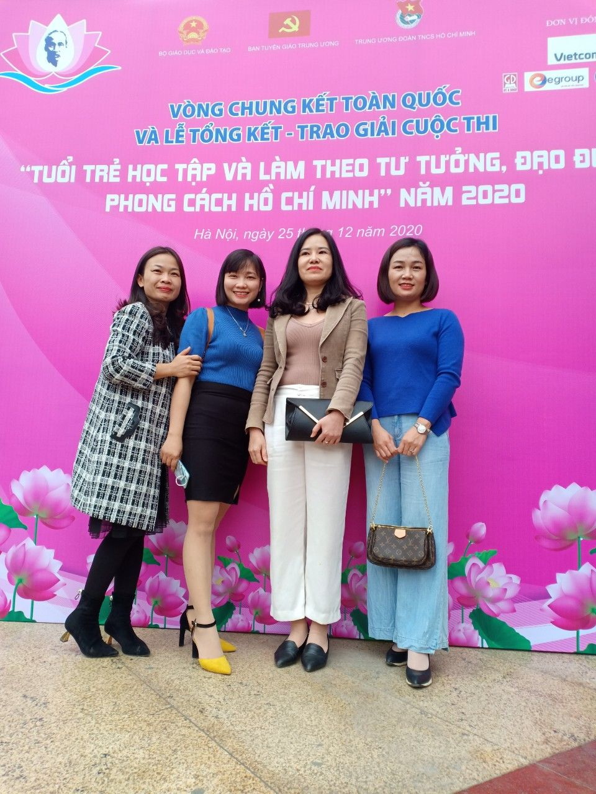
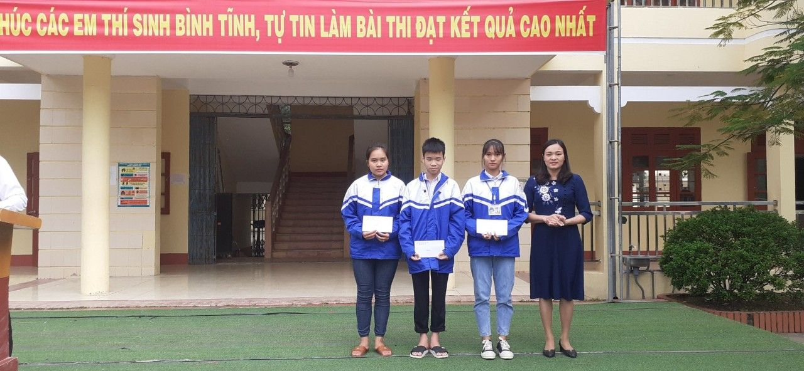
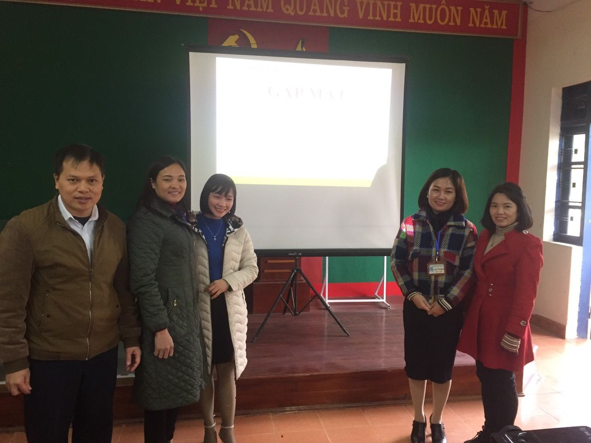

Ấn tượng từ Cuộc thi "Tuổi trẻ học tập và làm theo tư tưởng, đạo đức, phong cách Hồ Chí Minh" trực tuyến toàn quốc năm 2020
Việc đẩy mạnh học tập và làm theo tư tưởng, đạo đức, phong cách Hồ Chí Minh ngày càng thực chất, đi vào chiều sâu, dần trở thành ý thức tự giác, tinh thần trách nhiệm của mỗi tổ chức đảng, cơ quan, đơn vị, của từng cán bộ, đảng viên và Nhân dân; tư tưởng, đạo đức, phong cách của Người từng bước trở thành nền tảng tinh thần vững chắc của đời sống xã hội.

Cô Hoàng Thị Hậu (thứ 2 từ trái qua) tham gia Vòng chung kết toàn quốc Cuộc thi được tổ chức tại thủ đô Hà Nội vào ngày 24/12/2020
Cuộc thi “Tuổi trẻ học tập và làm theo tư tưởng, đạo đức, phong cách Hồ Chí Minh” do Bộ Giáo dục và Đào tạo, Ban Tuyên giáo Trung ương, Trung ương Đoàn TNCS Hồ Chí Minh và tập đoàn giáo dục Egoup phát động và tổ chức từ tháng 9 năm 2020 đến tháng 12 năm 2020. Cuộc thi đã thu hút được 1,5 triệu lượt thí sinh trong cả nước tham gia tại 3 bảng thi. Với 01 giải Ba Vòng loại tuần 2, 01 giải Ba toàn Vòng loại, 01 giải Tư Vòng bán kết và 01 giải Tư Vòng chung kết toàn quốc đã mang lại thành công rực rỡ cho Nhà trường. Sở Giáo dục Đào tạo Thái Nguyên là 01 trong 10 đơn vị Sở đạt thành tích xuất sắc tại cuộc thi và được nhận Bằng khen của Bộ Giáo dục và Đào tạo.
Ngay sau khi nhận được văn bản chỉ đạo của Sở Giáo dục và Đào tạo, Nhà trường đã xây dựng kế hoạch phát động và triển khai trong toàn thể CBGVNV và học sinh trong toàn trường. Chi bộ Trường THPT Nguyễn Huệ xác định, cuộc thi là đợt học tập chính trị sâu rộng cho Chi bộ Đảng, Đảng viên và quần chúng trong Nhà trường hết sức thiết thực và ý nghĩa.

Nhà trường trao giải cho các tập thể cá nhân đạt thành tích tốt của mỗi tuần thi Vòng loại

Gặp mặt, động viên cô Hoàng Thị Hậu trước khi tham dự Vòng chung kết toàn quốc
Trải qua 4 tuần thi của Vòng loại, cuộc thi đã thu hút được đông đảo CBGVNV và học sinh tham gia, với 25 GVNV trong độ tuổi dưới 35, 1579 học sinh dự thi (chiếm tỷ lệ 91,2%), THPT Nguyễn Huệ là 1 trong 2 trường có tỷ lệ dự thi đông nhất toàn tỉnh. Kết thúc Vòng thi loại Nhà trường có 01 giáo viên (là 01 trong 03 thí sinh xuất sắc nhất toàn tỉnh) và 03 học sinh được tham gia thi Vòng bán kết. Với sự bứt phá vượt trội và thành tích xuất sắc, 01 giáo viên của Nhà trường đã vinh dự là thí sinh xuất sắc nhất toàn tỉnh và là 01 trong 30 thí sinh xuất sắc nhất toàn quốc đại diện cho 30 tỉnh, thành phố tham gia thi Vòng chung kết toàn quốc Cuộc thi “Tuổi trẻ học tập và làm theo tư tưởng, đạo đức, phong cách Hồ Chí Minh” được tổ chức tại thủ đô Hà Nội vào ngày 24/12/2020.
Với thành tích xuất sắc đạt được, cuộc thi đã đem lại thành công rực rỡ nối tiếp cho Nhà trường trong việc triển khai thực hiện nhiệm vụ, chương trình hoạt động, được các cấp ghi nhận, góp phần tạo nên bề dày thành tích cho Chi bộ Đảng và Nhà trường./.